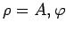
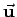
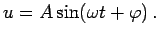
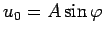
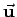
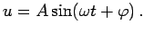
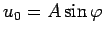

Inhalt Index DeskTop Bronstein

 Funktionen und ihre Darstellung Trigonometrische Funktionen (Winkelfunktionen) Beschreibung von Schwingungen
Funktionen und ihre Darstellung Trigonometrische Funktionen (Winkelfunktionen) Beschreibung von Schwingungen


Die allgemeine Sinusfunktion (2.127, 2.128) kann bequem mit den Polarkoordinaten  und den kartesischen Koordinaten x = a, y = b in einer Ebene dargestellt werden. Die Summe zweier solcher Größen ergibt sich dann als Summe der zwei Summandenvektoren (linke Abbildung).
Entsprechend liefert die Summe mehrerer solcher Vektoren die Linearkombination mehrerer allgemeiner Sinusfunktionen. Diese Darstellung wird Vektordiagramm genannt.
Die Größe u kann im Vektordiagramm für einen gegebenen Zeitpunkt t an Hand der rechten Abbildung bestimmt werden:
Zuerst wird durch den Koordinatenursprung O die Zeitachse OP(t) gelegt, die mit konstanter Winkelgeschwindigkeit  um O im Uhrzeigersinn rotiert. Zum Anfangszeitpunkt t=0 fallen y- und t-Achse zusammen. Danach ist in jedem Zeitpunkt t die Projektion ON des Vektors  auf die Zeitachse gleich dem Betrag der allgemeinen Sinusfunktion  Zur Zeit t=0 ist  die Projektion auf die y-Achse.
um O im Uhrzeigersinn rotiert. Zum Anfangszeitpunkt t=0 fallen y- und t-Achse zusammen. Danach ist in jedem Zeitpunkt t die Projektion ON des Vektors  auf die Zeitachse gleich dem Betrag der allgemeinen Sinusfunktion  Zur Zeit t=0 ist  die Projektion auf die y-Achse.